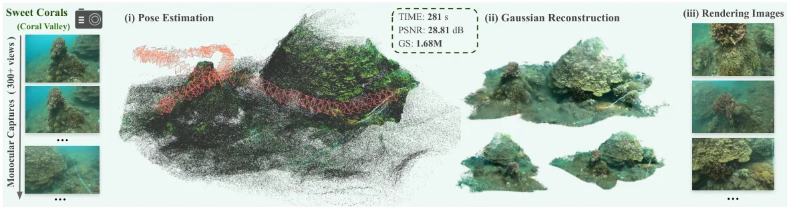
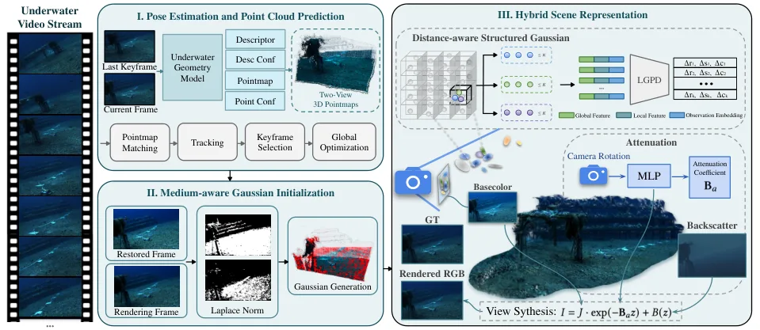
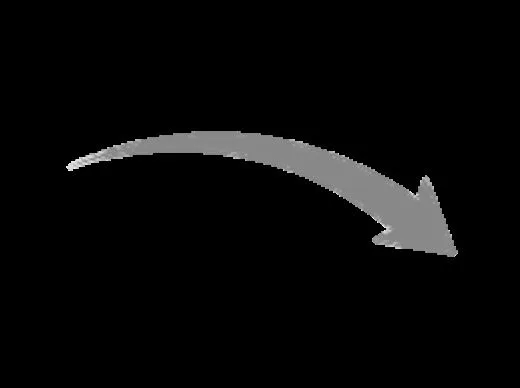

AquaFlow：面向水下流式重建的单目 Gaussian Splatting SLAM
AquaFlow: A Monocular Gaussian Splatting SLAM for Underwater Streaming Reconstruction
把 foundation model 几何先验、流式建图和水下成像补偿结合起来，直接处理恶劣介质中的可靠跟踪与重建。
real underwater trajectories
training image pairs
localization error vs WaterSplat-SLAM
PSNR gain vs WaterSplat-SLAM
overall mean ATE RMSE

动机与问题Motivation
动机与问题
水下光衰减、散射、非均匀照明和弱纹理会破坏跨帧对应关系，导致位姿漂移，并把错误几何传播到 Gaussian 地图。已有水下 3DGS 工作多依赖完整序列、预估位姿和离线 SfM，难以处理连续长视频；论文因此选择轻量的单目输入，目标是在流式条件下同时保持稳定跟踪、几何质量和渲染效率。
方法Method
方法总览
系统把流程拆成四个模块：水下适配的 3D 几何先验、跟踪与全局优化、混合场景—介质表示，以及联合优化目标。每个新帧与最新关键帧经过微调后的 MASt3R 得到 pointmap、描述子和置信度，再依据可靠匹配数与视差把帧分为关键帧、建图帧或普通帧；关键帧和建图帧触发介质引导的 Gaussian 增量初始化。
关键技术细节
MASt3R 在 224,273 对经过标定的水下图像对上微调，并保留 metric-scale 预测；跟踪使用置信度加权的 pointmap 对齐和 Huber 鲁棒损失，再对关键帧位姿做全局优化。表示层把距离条件化的结构化 neural Gaussian 与显式衰减/后向散射模型结合，LGPD 在局部 voxel 组内解码 Gaussian 残差；初始化阶段先用介质模型恢复较干净的颜色，再用 Laplacian-of-Gaussian 结构差异决定插入位置。

实验Experiments
实验设置
测试集包含 62 条轨迹：25 条来自公开基准，37 条来自互联网水下视频，覆盖 Canyons、RedSea、UW-Stereo-VI、SeaThru-NeRF、S-UW 和 Internet Data 六组场景。重建指标为 PSNR、SSIM、LPIPS，跟踪指标为刚体对齐后的 ATE RMSE，效率还统计场景时间、FPS 和 Gaussian 数量；比较对象包括 WaterSplat-SLAM、ARTDECO、UW-GS、HI-SLAM2、MonoGS、DROID-SLAM、MASt3R-SLAM 和 VGGT-SLAM2 等。
实验数字与比较
表 II 中 AquaFlow 的六组 PSNR 依次为 34.53、26.77、36.31、24.83、23.73、28.53 dB，对应 SSIM 为 0.955、0.836、0.920、0.739、0.741、0.852，LPIPS 为 0.199、0.272、0.303、0.346、0.277、0.241。表 IV 的六组 ATE RMSE 为 0.422、0.958、0.157、0.182、0.211、0.478 m，论文报告总体平均误差 0.401 m，并在 6 组数据中的 4 组取得最佳跟踪结果；与 WaterSplat-SLAM 的摘要级比较是定位误差下降 13.2%、PSNR 增加 4.74 dB。
消融/失败边界
FLSea-Canyons 消融中，完整模型为 PSNR 34.47、SSIM 0.953、LPIPS 0.209、601.6k Gaussian。去掉水下微调后变为 33.41/0.943/0.247，去掉距离嵌入后为 32.56/0.943/0.232；去掉介质初始化或 LGPD 也会带来结构缺失、颜色偏移或细节模糊。需要注意：这些是单个 Canyons 数据集上的组件分析，不能直接等价为所有环境下的因果保证。
局限与迁移Limitations & Transfer
局限与待核验
作者明确把扩大训练数据、提升 zero-shot 泛化，以及处理移动生物、漂浮颗粒和柔性结构列为后续工作，说明动态水下场景尚未被充分覆盖。论文对 37 条互联网序列使用 COLMAP 重建内参和 pseudo ground truth，并人工检查点云一致性；同时，效率比较不计入 UW-GS 的 COLMAP 与 Depth Anything V2 预处理时间。对真实机器人部署而言，还应补查 IMU/VIO 融合、失效检测、长期闭环、GPU/Jetson 延迟和 metric-scale 漂移。
与你研究路线的关系
这篇工作可作为“Geometry Foundation Model → 可靠状态估计 → 在线几何优化”的桥梁案例：可迁移模块是域适配 pointmap、置信度加权几何残差、关键帧/建图帧调度和介质感知地图更新。对你的路线，最值得复用的不是水下外观模型本身，而是把 learned prior 接入 pose-graph/BA、显式记录不确定性，并设计退化与传感器失效实验；后续可在 IMU/VIO、实时 GPU 和动态场景上验证其能否迁移到真实机器人。

{kind=link}
